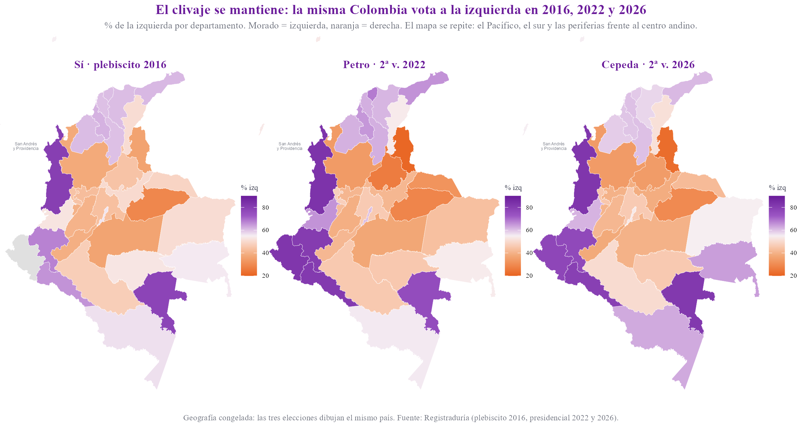
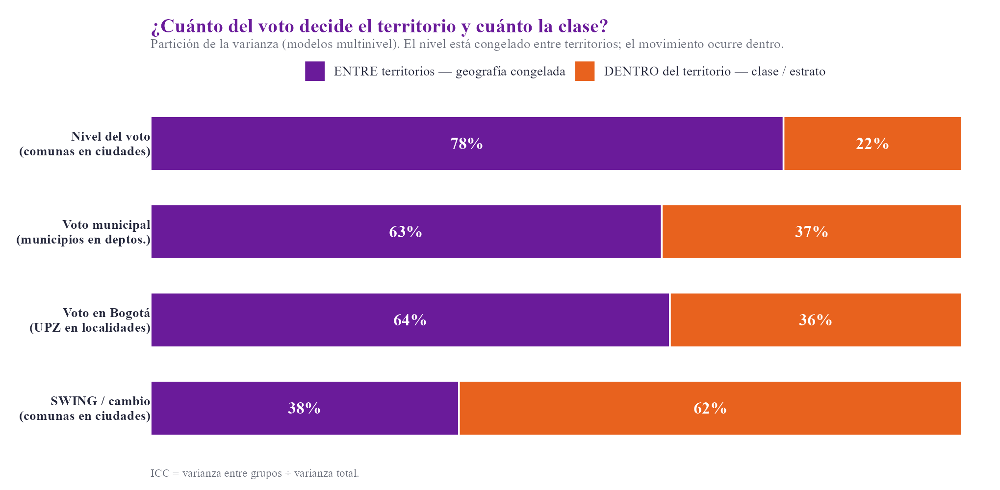
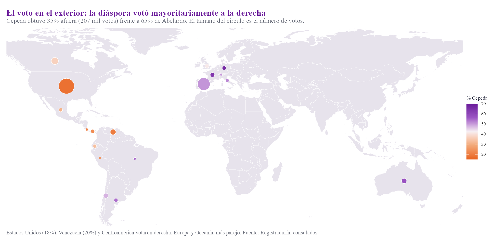
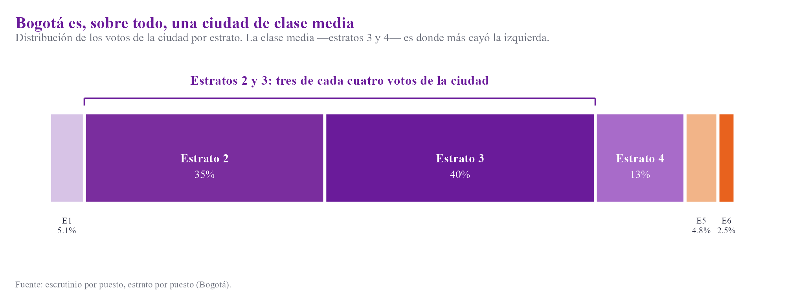
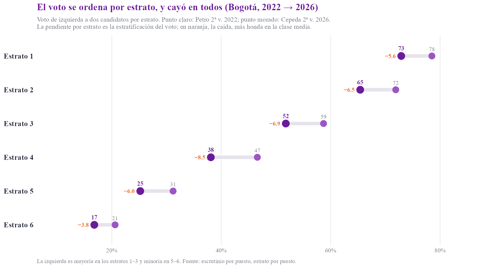
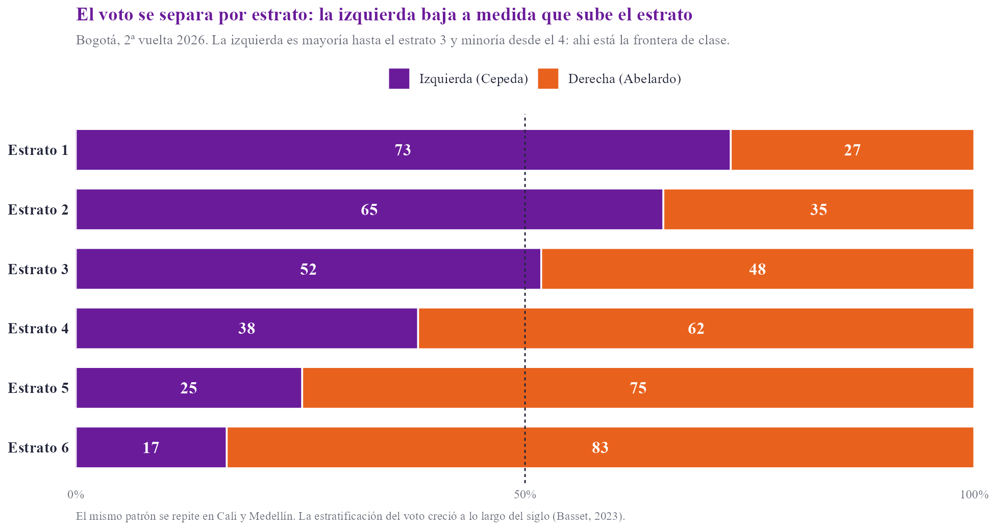
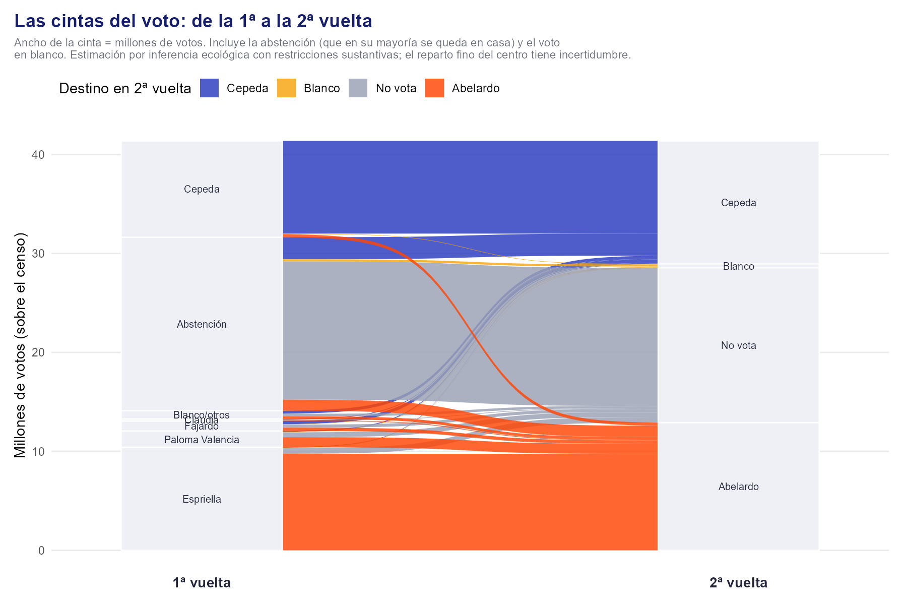
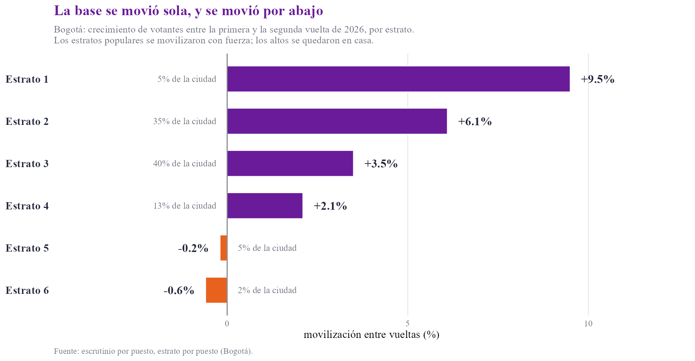
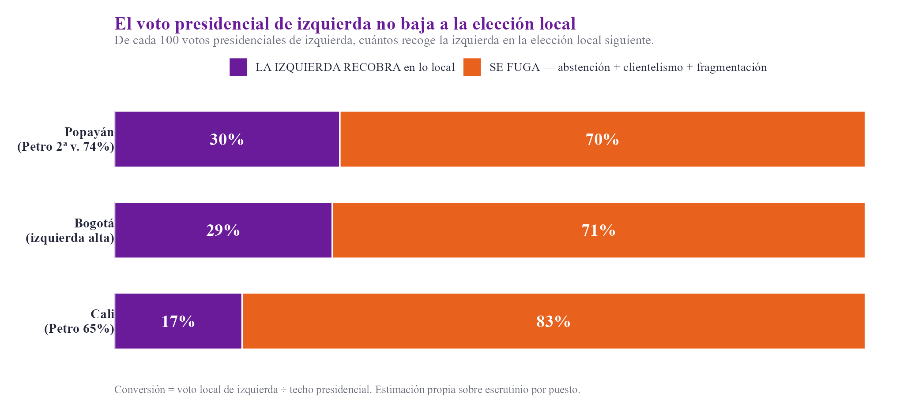
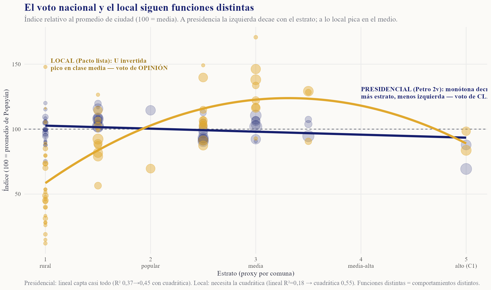

Iván Cepeda perdió la Presidencia por 247 mil votos y la izquierda quedó como la primera fuerza del país, con 12,7 millones de votos. Leo esta elección desde la guerra de posiciones de Gramsci: una derrota electoral es un momento de una lucha larga por la hegemonía, y la tarea que se abre es la recomposición del «príncipe moderno», el partido político que organiza y conduce a las clases populares. Con ese marco busco una visión holística que supere la inmediatez de los análisis aislados y las explicaciones unicausales de la derrota como: «el radicalismo de Petro en el gobierno alejó los sectores de clase media» o «por Bogotá perdimos la Presidencia». Me valgo de pruebas estadísticas y de los datos de votación a nivel de municipio, UPZ y puesto.
La coyuntura electoral actual remite a la geografía política de 2016, la de las votaciones del plebiscito. Desde aquel momento la división entre “sí” y “no” al acuerdo de paz se reproduce de manera casi idéntica. El voto por el «Sí» de 2016, el de Petro en 2022 y el de Cepeda en 2026 dibujan el mismo país. La correlación entre el mapa de 2022 y el de 2026 llega a 0,97. Donde ganó el «Sí» a nivel municipal gana hoy la izquierda; donde ganó el «No» gana hoy la derecha. Una década separa la primera votación de la última, y el dibujo sigue siendo el mismo.
Es lógico pensar que esa coyuntura del acuerdo de paz construyó un sedimento político, la fuerza estructuradora del momento actual (Lipset y Rokkan, 1967). Esta idea es casi una verdad de Perogrullo entre los analistas políticos, pero va más allá del acuerdo de paz mismo: hunde raíces en formas culturales y territoriales que vienen desde la Colonia. El clivaje es a la vez de paz-guerra y de centro-periferia, el país de las regiones frente al centro andino, reflejo de una formación fragmentada del Estado en el territorio. Las interpretaciones del porqué del clivaje pueden ser diversas; pero la realidad electoral que muestra no admite discusión.

El voto de izquierda del pasado explica el 93% de la votación municipal de 2026. Una descomposición por niveles muestra que el 78% del voto de una comuna lo decide la ciudad en la que está y el 63% del voto municipal lo decide su departamento. El territorio es la placa estable de esta elección. Sobre ese terreno, la izquierda conservó su geografía: ganó Bogotá, el Pacífico, el sur del país y las costas.

Por su parte, en el exterior, la diáspora votó distinto: Cepeda obtuvo apenas el 35% y perdió con claridad en Estados Unidos, Venezuela y Centroamérica, con un voto más parejo en Europa y Oceanía. El exilio y la migración reciente pesan en esa geografía, y son un terreno propio de disputa.

Aquí cabe una pregunta: si la estructura general del mapa no se mueve, ¿de dónde salen resultados electorales diversos (victoria de Duque, victoria de Petro, victoria de ADLE)? La respuesta está un nivel más abajo. Bajo el mapa estable municipal, el voto se desplazó por estrato. El 81% del cambio frente a 2022 ocurre dentro de las ciudades, entre barrios, y apenas el 19% entre ciudades. El país conservó su territorio, y las placas se fisuraron por dentro.1
En Bogotá, la caída golpeó en todos los estratos, y fue más honda en la clase media. El estrato 4 perdió 8,5 puntos frente a 2022 y el estrato 3 perdió 6,9, mientras los extremos se movieron menos: el estrato 1 cayó 5,6 y el estrato 6 solo 3,8. Los estratos 2 y 3 reúnen tres de cada cuatro votos de la ciudad, de modo que esa caída de “la clase media” pesa mucho en una ciudad de ingresos medios. El sur popular de Bogotá resistió, el oriente de Aguablanca en Cali resistió, el norte popular de Medellín incluso creció. La misma clase media urbana se movió igual en tres ciudades distintas.


Esta caída por estratos y su relevancia en la campaña debe entenderse en clave histórica. Desde hace unos veinte años asistimos a una estratificación del voto en las ciudades capitales. El centro y los sectores liberales la leen como una «fractura social» o “polarización” preocupante. Yo la leo de otra manera: la estratificación del voto es uno de los grandes méritos de la izquierda. Desde la elección de los gobiernos progresistas en Bogotá, las clases populares votan cada vez más como clase, con conciencia de sus intereses, y esa es una politización que antes no existía. Por esa vía la izquierda se volvió competitiva en las alcaldías de Bogotá, Cali y Medellín, y finalmente tuvo su culmen en la presidencia (Basset, 2023, lo documenta como la creciente estratificación del sistema de partidos).

Este proceso debe ser leído como la constitución de un sujeto político popular semejante al de Bolivia, Venezuela o Brasil, surgido en Colombia de manera tardía. En una generación, el descontento frente a los partidos y clases políticas pasó a ser identidad política anclada en el proyecto del Pacto Histórico y la figura de Gustavo Petro. Ese sujeto, arraigado en los barrios populares y los territorios, es el activo más valioso de la izquierda colombiana, en las elecciones y más allá de ellas, en la guerra de posiciones.
Volviendo a las elecciones de 2026, detrás de esa caída por estratos está el voto de Petro y su desgaste. Cepeda partió del piso que dejó la elección de Petro en 2022, y ese piso bajó algo en todos los estratos. El porqué de la caída de Petro es una pregunta política abierta —el desgaste del ejercicio del gobierno, la comunicación, el rumbo de las reformas, etc.—, y su respuesta corresponde al debate y a los análisis que demos colectivamente.
El crecimiento de Cepeda vino de abajo. Entre la primera y la segunda vuelta sumó 2,96 millones de votos —un salto del 31%, idéntico al de Petro en 2022—, y el grueso salió de la abstención: cerca de 2,2 millones de personas que no habían votado salieron a hacerlo por él, (alrededor de dos por cada una que salió por su rival). La base se movió sola, empujada por la convicción y por el miedo a una derecha cada vez más radical.
La aritmética aclara qué pasó con cada bloque. Una lectura pública atribuyó la elección al centro y dijo que Fajardo y Claudia entregaron hasta el 81% de sus votos a Cepeda. Eso no ocurrió. El centro se repartió casi en tercios: un tercio fue a Cepeda, un tercio a Abelardo y un tercio se quedó en casa o votó en blanco. Y el centro entero sumó apenas 1,22 millones, así que el tercio que recibió Cepeda fue cerca de 400 mil votos, una fracción de su crecimiento de 2,96 millones. La derecha, en cambio, se consolidó: los 12,94 millones de Abelardo equivalen casi exactamente a la derecha de primera vuelta —Espriella y Paloma, 12,06 millones— más una porción de la abstención. Las cuentas no dejan espacio para un cruce grande del centro ni de la derecha hacia Cepeda. El motor de la elección fue la abstención que salió a votar por él.

Aquí es bueno regresar a la comparación con 2022. Aquel año, Petro creció lo mismo entre vueltas y ganó; este año Cepeda creció lo mismo y perdió, porque arrancó atrás. La movilización del voto militante y de la abstención ocurrió las dos veces. Lo que cambió fue la conducción: en 2022 la energía del estallido estaba fresca y la campaña le dio orientación y margen de acción, frente a un gobierno desdibujado e impopular como el de Duque.
En esta ocasión, como mencioné arriba, la derecha llegó más unida a segunda vuelta. El electorado del uribismo que debía votar, por orientación de su “patriarca”, por Paloma Valencia se subió temprano al barco de Abelardo, eso hizo que la fragmentación del traslado de votos, que se presentó hace 4 años entre Fico-Rodolfo, no se diera. La izquierda, sin un diálogo con Sergio Fajardo, dependió más de que su base política afín se moviera.
Bogotá lo muestra con claridad por su volumen de votos. Entre la primera y la segunda vuelta, el estrato 1 movilizó un 9,5% adicional de votantes y el estrato 2 un 6,1%, mientras los estratos altos no presentaron ese incremento en la participación. La misma fuerza apareció en la periferia: Chocó movilizó un 29%, Vaupés un 27% y La Guajira un 29%, con Cepeda por encima del 80% en buena parte del Pacífico.

Esa fuerza se movió con poca orientación. La campaña pecó de exceso de confianza, apostó a «ganar en primera vuelta», evitó debates y dejó a gran parte de su base sin línea clara, y a personas indecisas sin golpes de opinión que les convencieran. Uno de los balances positivos que se pueden sacar de la elección es que existe una base social fuerte y organizada, que se debe conservar y estructurar de cara a cuatro años de oposición. El cómo hacerlo, debe ser una discusión clave en una futura asamblea y constitución del Pacto Histórico como fuerza política.
De manera adicional, debemos situar el lugar de las elecciones en el capitalismo y el contexto internacional. Estos factores pesan de manera determinante en un capitalismo periférico y dependiente como el colombiano. La competencia electoral no es un terreno neutro: se juega con reglas que favorecen a quien tiene dinero, medios, maquinaria y el apoyo del imperio estadounidense, en un contexto de reacomodo y disputa geopolítica entre las potencias (Marini, 1973).
En ese marco, la competencia electoral fue desigual. Aunque la izquierda era gobierno, las grandes maquinarias y los recursos públicos no se volcaron hacia la campaña. Las fuerzas políticas se inclinaron a la derecha por tres vías. La primera es el dinero y las maquinarias que movilizan el voto popular con recursos. La segunda es el terreno digital, donde las plataformas amplificaron el mensaje mejor financiado y X, bajo el control de Elon Musk, funciona como un megáfono político con un algoritmo opaco (sin contar con los medios hegemónicos como Semana, RCN, etc.). La tercera es la unión de las derechas, que abandonaron el barco de Paloma Valencia desde la primera vuelta (ya comentado arriba),
Quiero detenerme un poco más en el terreno digital ya que fue clave especialmente para posicionar la cara de un hombre corrupto y poco presentable como De la Espriella a la opinión general. Cifras incalculables de dinero se fueron a pauta publicitaria para construir su imagen y atacar la del senador y defensor de derechos humanos Iván Cepeda.
Ese terreno manejado por grandes corporaciones trasnacionales estadounidenses favorece a la ultraderecha internacional y a los llamados «tecnofascistas»: la colusión entre las grandes tecnológicas, los millonarios de ultraderecha y las agendas autoritarias está a la orden del día presente no solo en Colombia, sino en Ecuador, Honduras, Perú, etc. El algoritmo de recomendación premia la indignación y el miedo, segmenta a cada usuario y le entrega el mensaje que más lo moviliza, y concentra en pocas plataformas el poder de fijar la conversación pública. En manos de la ultraderecha, y con X convertida en arma partidista, esa maquinaria opera como ingeniería social: fabrica percepción, identidad y miedo a escala. La izquierda compite en esa cancha en desventaja, con menos dinero y menos dominio técnico del algoritmo.
Todos estos mecanismos y las grandes denuncias de delitos electorales como compra de votos cuestionan a fondo la democracia electoral, sin embargo, dentro de las urnas, la maquinaria, la compra de votos y la modelación algorítmica del comportamiento no saltan a la vista. El conteo se comportó como una elección sin anomalías estadísticas: la consistencia entre primera y segunda vuelta por municipio llega a 0,97, el primer dígito de los conteos sigue la ley de Benford y las mesas atípicas suman un orden de magnitud menos que la diferencia final. El resultado en las urnas iba a ser legítimo. La pendiente de la cancha actúa antes de la urna, al destaparlas en la impugnación de resultados, se encontraron los votos de la derecha y la izquierda casi idénticos al del preconteo.
Recuperar el gobierno exige un proyecto hegemónico que unifique un bloque amplio, más allá de la aritmética de una campaña. La izquierda vuelve con avances. Es la primera fuerza, conserva 12,7 millones de votos, el salario mínimo ganó poder de compra a las clases trabajadoras, se ha reducido el desempleo y la economía se mantuvo estable. Esos logros son la muestra de que en materia económica existió una buena administración. Sin embargo, aunque son unos logros loables, la hegemonía se gana en otro terreno: las ideas, la cultura, la comunicación y la disputa por la “clase media”. Ahí está la tarea de los próximos años.
La oposición se libra próximamente en la oposición y la política territorial, y ahí la izquierda arrastra una debilidad vieja. El voto presidencial de izquierda es alto, está congelado y en la elección local ese voto desciende poco a apoyar las fuerzas políticas alternativas. El fenómeno local tiene otra lógica, y allí mandan las maquinarias.
Para observar ese desfase entre voto presidencial vs voto a elecciones locales, medí tres ciudades. En Popayán, Petro alcanzó 74% en 2022 y la izquierda recogió cerca del 30% de ese voto en la elección local de 2023. En Bogotá la conversión ronda el 29%. En Cali, con Petro en 65%, baja al 17%, y la base popular del oriente migró hacia un liderazgo populista de raíz clientelar.

Hay dos formas de ganar un voto (Kitschelt, 2000). Una es programática, por convicción, y produce un voto de opinión: urbano, de clase media, que se sostiene solo. La otra es clientelar, mediada por recursos, y produce un voto de maquinaria: popular, que llega con la estructura. La izquierda gana votos presidenciales por opinión, y deja el voto popular sobre la mesa en lo local, donde la maquinaria lo recoge. Es tarea de esa militancia movilizada en la campaña por Iván Cepeda, organizarse para estas nuevas elecciones territoriales y mantener su movilización y convencimiento para dar vuelta a esta tendencia.

ADLE, representa un proyecto político de derecha con rasgos fascistas, la idea de ubicar a una parte del pueblo como un enemigo interno (que es el germen a combatir en la idea de la unidad nacional), la idea de una defensa de la propiedad privada a ultranza, el racismo y la xenofobia, etc. Por lo tanto es imperativo revisar en la historia, que estrategias políticas fueron efectivas para combatirlo o frenarlo. En 1935, la Internacional Comunista adoptó la estrategia de los frentes populares, alianzas amplias contra el fascismo que articularon a la izquierda con sectores democráticos. En Chile, el plebiscito de 1988 derrotó a la dictadura de Pinochet con una campaña profesional y luminosa, la franja del «NO», que ganó el terreno comunicacional con alegría y método. En América Latina reciente, el Frente Amplio de Uruguay y la coalición amplia de Lula en Brasil en 2022 vencieron a la derecha, incluido un sector ultra amplificado por las plataformas. El patrón se repite: frente amplio, defensa de derechos, comunicación profesional y trabajo territorial de largo aliento.
Frente al tecnofascismo, desde varios sectores y movimientos sociales que hicimos parte de la campaña surgió la idea de construir un tecnoleninismo: Lenin entendió el periódico como un «organizador colectivo»: el instrumento de comunicación forma parte de la organización política (¿Qué hacer?, 1902). El organizador colectivo de hoy es el algoritmo, y el tecnoleninismo es la organización y tarea de dominarlo, producir desde él y disputar con capacidad propia el terreno que el adversario ocupa.
La izquierda forma cuadros: militantes de formación sólida, que piensan a largo plazo y rinden poco en la eficiencia electoral. Produce pocos políticos profesionales, capaces de capitalizar resultado tras resultado, sumar voto a voto y afinar la operación de una elección a la siguiente. El instrumento que la izquierda necesita debe tener un pie en la calle —la movilización, las marchas, el trabajo de base— y otro en las urnas —los partidos, las listas, la operación electoral—, unidos.
Esa es la transición pendiente: pasar de campañas poco competitivas a la profesionalización de la política. La derecha la hizo hace tiempo, y por eso opera mejor en el territorio electoral local. Las experiencias de izquierda que ganaron —el aparato del PT en Brasil y el partido MORENA en México— son izquierdas profesionalizadas, con un instrumento partidario que orienta y sostiene la logística de la movilización. Por lo tanto, el Pacto Histórico debe profesionalizar la política sin perder la formación de cuadros. Esta es una condición ineludible para operar en el territorio y ganarle a la derecha su propio juego, de cara a 2027 y midiéndose con una derecha cada vez más radical en las elecciones territoriales.
La elección se parece a una geología. El mapa regional es la placa estable, congelada desde 2016; las clases sociales (midiéndose con sus limitaciones mediante el estrato) son la falla por donde se mueve la energía de los cambios políticos. La izquierda se volvió una fuerza política cuando pudo sumar más allá de su base. La ruta hacia 2027 y la oposición es generar un pacto amplio (no solo con el centro, sino con todos los sectores democráticos del país). Este frente además debe construir un pacto social: la defensa de los derechos humanos, la defensa de los logros sociales y un programa de medidas universales.
Ese mapa congelado no es eterno, y ahí aparece una tarea de fondo. En 2026 la izquierda ganó terreno en ciudades que le fueron adversas. En el área metropolitana de Bucaramanga creció con fuerza: Bucaramanga subió 8 puntos frente a 2022 y Piedecuesta casi 12. Medellín se sostuvo mientras el país retrocedía. El sedimento empieza a moverse en el corazón santandereano y antioqueño de la derecha. La apuesta de largo plazo es cambiar el clivaje mismo: llevar el proyecto a esas ciudades donde ya germina y disputar el mapa que hasta ahora parecía fijo.
Las medidas universales son estratégicas, ya que también llegan la clase media y media-alta. La agenda de vivienda asequible y de congelamiento de arriendos que impulsa Zohran Mamdani en Nueva York es un ejemplo: toca a la clase media y conserva a la base popular. Por esa vía se ganan las clases medias que deciden la elección, en un empate de fuerzas entre los plebeyos y la burguesía.
Una de las llaves está en el programa, en una idea que tomo de mi amigo y compañero Santiago Garcés. A largo plazo, una economía industrializada y no extractivista-rentista sostiene un crecimiento estable en el que incluso las clases medias viven mejor que hoy. El modelo neoliberal vigente, con apaciguamiento de la deuda y políticas de austeridad, ofrece estabilidad con crecimiento bajo y mantiene al país en el subdesarrollo por generaciones. La diversificación productiva y la industrialización son la base material de un bienestar que alcance a la clase media, y son a la vez un argumento electoral hacia ella.
La tarea que sigue es fortalecernos en la guerra de posiciones: convertir el poder social en poder institucional a través de un instrumento profesionalizado, ganar la hegemonía cultural, dominar el algoritmo y tejer el frente amplio con un programa universal. Eso exige cuadros nuevos, que conozcan y entiendan estas prácticas —el dato, el territorio, el algoritmo, el programa— y permitan un salto cualitativo.
Basset, Y. (2023). Votos y estratos: la creciente estratificación social del sistema partidario colombiano en el siglo XXI. Revista Mexicana de Ciencias Políticas y Sociales.
Dimitrov, G. (1935). La ofensiva del fascismo y las tareas de la Internacional Comunista (Informe al VII Congreso).
García Linera, Á. (2008). La potencia plebeya. Buenos Aires: CLACSO / Siglo del Hombre.
González, F. E. (2014). Poder y violencia en Colombia. Bogotá: Odecofi–CINEP.
Gramsci, A. (1929–1935). Cuadernos de la cárcel. Edición crítica de V. Gerratana (1975).
Gutiérrez Sanín, F. (2007). ¿Lo que el viento se llevó? Los partidos políticos y la democracia en Colombia, 1958–2002. Bogotá: Norma.
Jessop, B. (2008). State Power: A Strategic-Relational Approach. Cambridge: Polity Press.
Kitschelt, H. (2000). Linkages between Citizens and Politicians in Democratic Polities. Comparative Political Studies, 33(6–7).
Lenin, V. I. (1902). ¿Qué hacer?; (1920). El izquierdismo, la enfermedad infantil del comunismo.
Lipset, S. M. & Rokkan, S. (1967). Cleavage Structures, Party Systems, and Voter Alignments. Nueva York: The Free Press.
Luxemburg, R. (1906). Huelga de masas, partido y sindicatos.
Marini, R. M. (1973). Dialéctica de la dependencia. México: Era.
Mouffe, C. (2007). En torno a lo político. Buenos Aires: Fondo de Cultura Económica.
Varoufakis, Y. (2023). Technofeudalism: What Killed Capitalism. Londres: The Bodley Head.
Zuboff, S. (2019). The Age of Surveillance Capitalism. Nueva York: PublicAffairs.
Nota: «tecnofascismo» fue usado por el periodista Michael Malone en los años noventa y desarrollado por la crítica reciente sobre Silicon Valley y la ultraderecha. «Tecnoleninismo» es una categoría que propongo en este texto.
Sobre la desindustrialización (manufactura de ~26% del PIB en 1983 a ~12% hoy; petróleo de <5% a ~55% de las exportaciones): Echavarría, J. J., El proceso colombiano de desindustrialización (Banco de la República); Sectorial. La tesis del cambio estructural se apoya en la tradición estructuralista de la CEPAL (Prebisch). Idea de programa compartida con Santiago Garcés.
Datos: Registraduría Nacional (escrutinio por mesa 2026; MMV 2022; territoriales 2019/2023; plebiscito 2016; consulados). Modelos multinivel (lme4) y SEM (lavaan), inferencia ecológica y estimaciones propias. Análisis: Daniel Santiago Roldán.